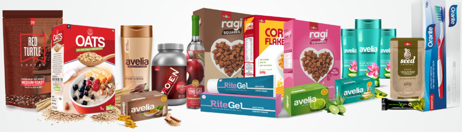
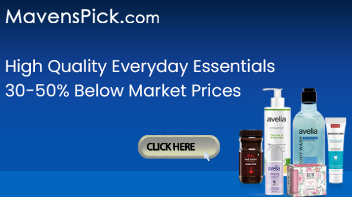
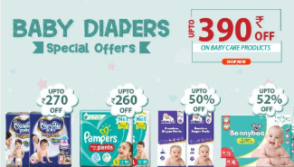
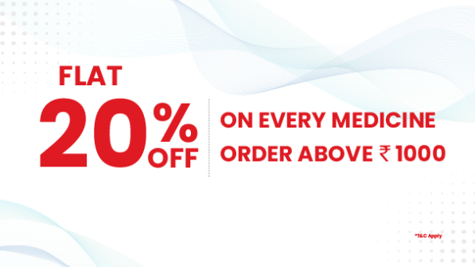

Stay Healthy with Tata 1mg: Your Favourite Online Pharmacy and Healthcare Platform
We Bring Care to Health.
Tata 1mg is India's leading digital healthcare platform. From doctor consultations on chat to online pharmacy and lab tests at home: we have it all covered for you. Having delivered over 25 million orders in 1000+ cities till date, we are on a mission to bring "care" to "health" to give you a flawless healthcare experience.
Tata 1mg: Your Favourite Online Pharmacy!
Tata 1mg is India's leading online chemist with over 2 lakh medicines available at the best prices. We are your one-stop destination for other healthcare products as well, such as over the counter pharmaceuticals, healthcare devices and homeopathy and ayurveda medicines.
With Tata 1mg, you can buy medicines online and get them delivered at your doorstep anywhere in India! But, is ordering medicines online a difficult process? Not at all! Simply search for the products you want to buy, add to cart and checkout. Now all you need to do is sit back as we get your order delivered to you.
In case you need assistance, just give us a call and we will help you complete your order.
And there is more! At Tata 1mg, you can buy health products and medicines online at best discounts.
Now, isn't that easy? Why go all the way to the medicine store and wait in line, when you have Tata 1mg Pharmacy at your service.
The Feathers in Our Cap
At Tata 1mg, our goal is to make healthcare understandable, accessible and affordable in India. We set out on our journey in 2015, and have come a long way since then. Along the way, we have been conferred with prestigious titles like BML Munjal Award for 'Business Excellence through Learning and Development', Best Online Pharmacy in India Award and Top 50 venture in The Smart CEO-Startup50 India. We have been selected as the only company from across the globe for SD#3 "Health & Well Being for all" by Unreasonable group, US State Department. In 2019 alone we received three awards including the BMW Simply Unstoppable Award.
The Services We Offer
Tata 1mg is India's leading digital healthcare platform, where you can buy medicines online with discount. Buy medicine online in Delhi, Mumbai, Bangalore, Hyderabad, Pune, Gurgaon, Noida, Kolkata, Chennai, Ahmedabad, Lucknow and around a 1000 more cities. Besides delivering your online medicine order at your doorstep, we provide accurate, authoritative & trustworthy information on medicines and help people use their medicines effectively and safely.
We also facilitate lab tests at home. You can avail over 2,000 tests and get tested by 120+ top and verified labs at the best prices. Need to consult a doctor? On our platform, you can talk to over 20 kinds of specialists in just a few clicks.
Customer centricity is the core of our values. Our team of highly trained and experienced doctors, phlebotomists and pharmacists looks into each order to give you a fulfilling experience.
We’ve made healthcare accessible to millions by giving them quality care at affordable prices. Customer centricity is the core of our values. Our team of highly trained and experienced doctors, phlebotomists and pharmacists looks into each order to give you a fulfilling experience.
Visit our online medical store now, and avail online medicine purchase at a discount.
Stay Healthy!